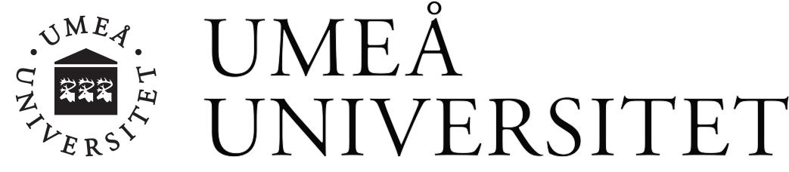
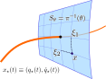
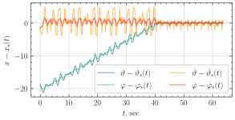
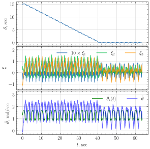

| $q$ | generalized coordinates |
| $\dot q \equiv \frac{dq}{dt}$, $\ddot q \equiv \frac{d^2q}{dt^2}$ | generalized velocities and acceletations |
| $u$ | control input |
| $M(q) \in \mathbb{R}^{2\times 2}$ | positive definite symmetric matrix |
| $C(q, \dot q) \in \mathbb{R}^{2\times 2}$ | a matrix function which is linear in $\dot q$ |
| $G(q) \in \mathbb{R}^2$ | contains potential forces |
| $F(q) \in \mathbb{R}^{2}$ | is a nonzero vector field |
A common approach to stabilizing $\mathrm{orb}\,x_\star$ is based on the transverse linearization.
We define new coordinates in a tubular vicinity of $\mathrm{orb} x_\star$:
This is the transverse linearization.
Can we construct a different class of stabilizing controllers?
The LTV system possesses special structure
Let $h:\mathbb{R}^2\to\mathbb{R}$ satisfy $$ h(q)=0,\qquad dh(q)M^{-1}(q)F(q)\neq0 \quad \forall q\in\mathrm{orb}\,x_\star. $$ Define the transverse coordinates $\xi=\beta(x)$ by $$ \xi_1=h(q),\qquad \xi_2=L_{\dot q}h(q),\qquad \xi_3=\beta_3(q,\dot q), $$ where $d\beta_3$ is linearly independent of $dh$ and $dL_{\dot q}h$. The control transformation $u\mapsto w$ is defined as $$ \begin{aligned} w={}&dh(q)M^{-1}(q) \bigl(-C(q,\dot q)\dot q-G(q)+F(q)u\bigr)\\ &+L_{\dot q}^2h(q)+k_1h(q)+k_2L_{\dot q}h(q), \end{aligned} $$ where $k_1,k_2>0$.Consider the LTV system \[ \frac{d\bar\xi}{d\theta} = A\left(\theta\right) \bar\xi + B\left(\theta\right) w \] where $\bar\xi \in \mathbb{R}^3$, $w \in \mathbb{R}$, and the continuous matrix functions $A(\theta) \in \mathbb{R}^{3\times3}$ and $B(\theta) \in \mathbb{R}^{3\times1}$ are $T$-periodic. Assume that the unforced system \[ \frac{d \bar\xi}{dt} = A\left(\theta\right) \bar\xi \] admits two solutions $\bar\xi = e_{1}\left(\theta\right)$, $\bar\xi = e_{2}\left(\theta\right)$, satisfying $\lim_{\theta\to\infty}e_{i}\left(\theta\right)=0$, and that for all $\theta$ the vectors $e_{1}\left(\theta\right)$, $e_{2}\left(\theta\right)$ and $B\left(\theta\right)$ are linearly independent. Define \[ z\equiv n^{\top}(\theta) \bar\xi \in\mathbb{R}, \quad \text{where} \quad n(\theta)\equiv\frac{e_{1}\left(\theta\right)\times e_{2}\left(\theta\right)}{\left\Vert e_{1}\left(\theta\right)\times e_{2}\left(\theta\right)\right\Vert }\in\mathbb{R}^{3}, \] where "$\times$" denotes the standard cross product in $\mathbb{R}^3$. Then, for any $k_3>0$, the feedback control law \[ w\left(\theta, \bar\xi\right) = -\frac{n^{\top}\left(\theta\right)A\left(\theta\right)n\left(\theta\right)z+k_3\mathrm{sign}\left(z\right)}{n^{\top}\left(\theta\right)B\left(\theta\right)}, \] renders the origin of the closed-loop system globally asymptotically stable.


